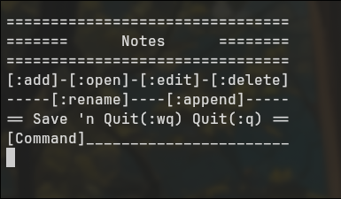
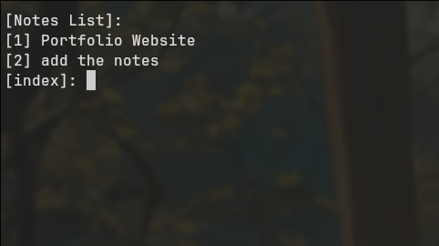
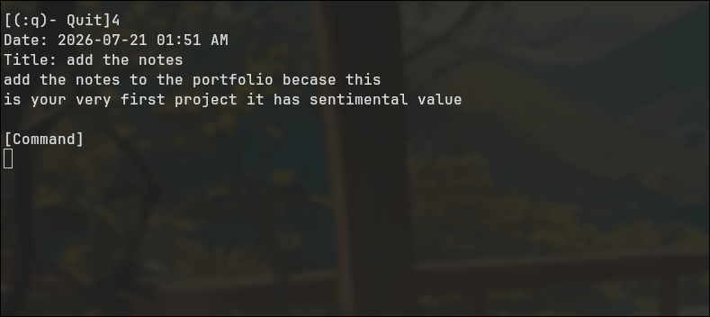
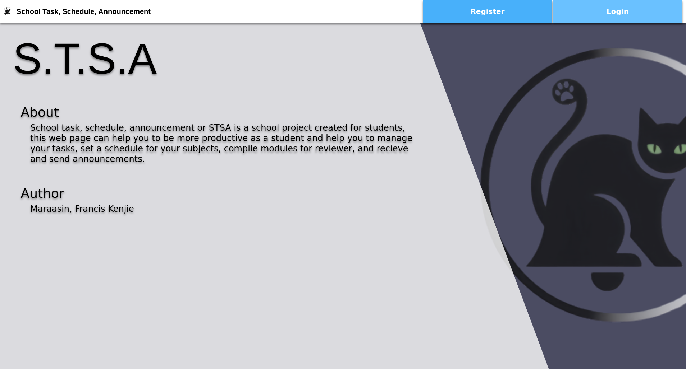
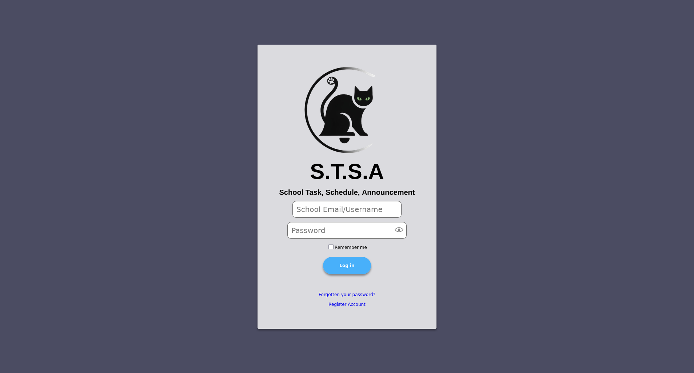
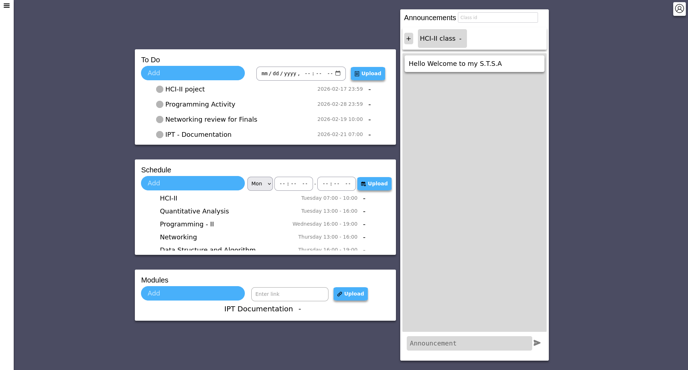
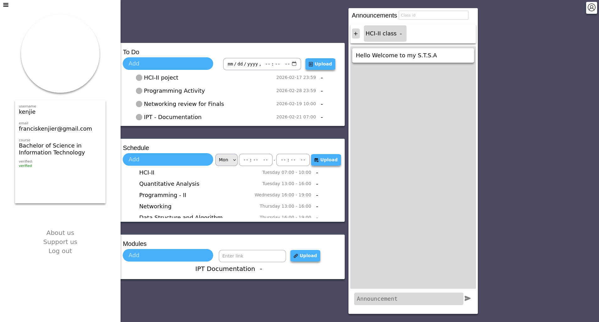

CodeKenjie/Kenjie The Greate
Hi, my name is Francis Kenjie R. Maraasin, I live in Imus City, Cavite, Philippines, and English is my second language. I am currently in my final year of college in Jesus Reigns' Christian College (JRCC) and preparing to begin my professional career. I am continuesly improving my skill and looking for a company where I can gain valuable knowledge, develop the right mindset, and grow into a successful professional in this field.
This will serve as my portfolio. Currently, I only have my academic projects, and I haven't started working on any "serious personal projects" yet except this one, if you consider it as such, I'm planning to create more personal projects, but right now I'm focusing on my studies. That said, I'll try to make time to work on them.
Academic Projects
First year



Notes is my very first program that i tried to create during my first year using Cpp, and its terrible but I tried my best. (Personal Project)
- Cpp
- No Database
This is my Java Project for our OOP Subject, This is just a simple Inventory System created using JAVA I used SQLite for database. nothing else to say its just Inventory
- Java
- SQLite
This is a Vote Management System, you can add candidates and make people register before voting, it just count how many people voted a registered candidate. Created using JAVA with SQLite as Database, I actually really like this project sadly I don't have screenshots and I dont wanna install jdk just to take screen shot.
- Java
- SQLite
Second year




STSA is my very first actual website that I created during my 2nd year of college using Node JS, this is a web-base student activity management for students to manage their activities, and schedules. it's not responsive tho and there's so many UI/UX error
- Javascript (Node.js)
- HTML
- CSS
- MongoDB
PCF-Care is a Web-Based Patient Record Management Built for Philadelphia Christ-centered Fellowship (PCF) located at # 26 Lunas Street, Quezon City, Philippines, 1114, It has built-in Inventory System, Patient Diagnosis and Prescription, Distribution feature, Scheduling, and Maintenance tracker, It is built to help clinic staff transition from paper-base to a digital base Management.
- PHP
- Javascript
- CSS
- Nginx
- Docker
- PostgreSQL
Personal Projects
Where to look
Github/CodeKenjieReach out
franciskenjiem@gmail.com
+639763707528